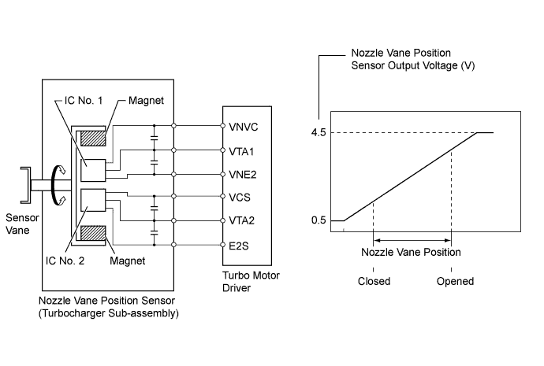
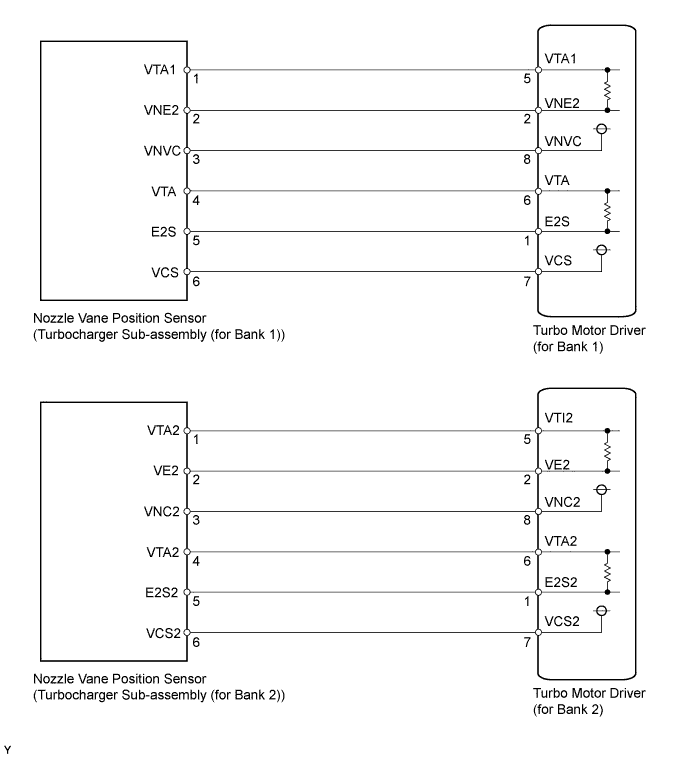
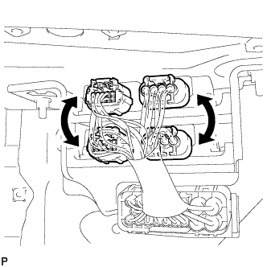
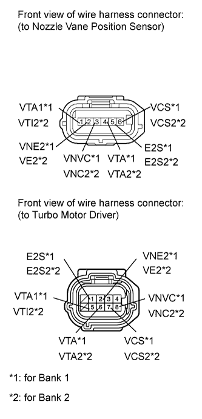

DTC P1258 VNT Position Sensor Range/Performance Bank 2 Sensor 1 |
DTC P1259 VNT Position Sensor Low Bank 2 Sensor 1 |
DTC P1260 VNT Position Sensor High Bank 2 Sensor 1 |
DTC P1262 VNT Position Sensor Low Bank 2 Sensor 2 |
DTC P1263 VNT Position Sensor High Bank 2 Sensor 2 |
DTC P2563 Turbocharger/Supercharger Boost Control Position Sensor "A" Circuit Range/Performance |
DTC P2564 Turbocharger/Supercharger Boost Control Position Sensor "A" Circuit Low |
DTC P2565 Turbocharger/Supercharger Boost Control Position Sensor "A" Circuit High |
DTC P2588 Turbocharger/Supercharger Boost Control Position Sensor "B" Circuit Low |
DTC P2589 Turbocharger/Supercharger Boost Control Position Sensor "B" Circuit High |

| DTC Detection Drive Pattern | DTC Detection Condition | Trouble Area |
| Engine switch on (IG) for 1 second | The difference between VTA and VTA1 voltage is 0.8 V or more for 0.5 seconds (1 trip detection logic). | Nozzle vane position sensor (turbocharger sub-assembly) |
| DTC Detection Drive Pattern | DTC Detection Condition | Trouble Area |
| Engine switch on (IG) for 1 second | VTA voltage is 0.5 V or less for 0.5 seconds (1 trip detection logic). |
|
| DTC Detection Drive Pattern | DTC Detection Condition | Trouble Area |
| Engine switch on (IG) for 1 second | VTA voltage is 4.5 V or more for 0.5 seconds (1 trip detection logic). |
|
| DTC Detection Drive Pattern | DTC Detection Condition | Trouble Area |
| Engine switch on (IG) for 1 second | VTA1 voltage is 0.5 V or less for 0.5 seconds (1 trip detection logic). |
|
| DTC Detection Drive Pattern | DTC Detection Condition | Trouble Area |
| Engine switch on (IG) for 1 second | VTA1 voltage is 4.5 V or more for 0.5 seconds (1 trip detection logic). |
|
| DTC Detection Drive Pattern | DTC Detection Condition | Trouble Area |
| Engine switch on (IG) for 1 second | The difference between VTAI2 and VTA2 voltage is 0.8 V or more for 0.5 seconds (1 trip detection logic). | Nozzle vane position sensor (turbocharger sub-assembly) |
| DTC Detection Drive Pattern | DTC Detection Condition | Trouble Area |
| Engine switch on (IG) for 1 second | VTI2 voltage is 0.5 V or less for 0.5 seconds (1 trip detection logic). |
|
| DTC Detection Drive Pattern | DTC Detection Condition | Trouble Area |
| Engine switch on (IG) for 1 second | VTI2 voltage is 4.5 V or more for 0.5 seconds (1 trip detection logic). |
|
| DTC Detection Drive Pattern | DTC Detection Condition | Trouble Area |
| Engine switch on (IG) for 1 second | VTA2 voltage is 0.5 V or less for 0.5 seconds (1 trip detection logic). |
|
| DTC Detection Drive Pattern | DTC Detection Condition | Trouble Area |
| Engine switch on (IG) for 1 second | VTA2 voltage is 4.5 V or more for 0.5 seconds (1 trip detection logic). |
|

| 1.INSPECT TURBO MOTOR DRIVER (for Bank 1 and Bank 2) |
Remove the rear fender splash shield sub-assembly RH.
Remove the front fender liner LH.
Connect the intelligent tester to the DLC3.
Turn the engine switch on (IG) and turn the tester on.
Enter the following menus: Powertrain / Engine / DTC.
Read the DTCs.
Clear the DTCs (Click here).
Turn the engine switch off.
 |
Interchange the connectors for the turbo motor driver of bank 1 and bank 2.
Turn the engine switch on (IG) for 1 second.
Enter the following menus: Powertrain / Engine / DTC.
Read the DTCs.
| Display (DTC Output) | Proceed to |
| DTCs change | B |
| DTCs do not change | A |
|
| ||||
| A | |
| 2.CHECK HARNESS AND CONNECTOR (TURBO MOTOR DRIVER - NOZZLE VANE POSITION SENSOR) |
 |
Disconnect the nozzle vane position sensor connector.
Disconnect the turbo motor driver connector.
Measure the resistance according to the value(s) in the table below.
| Tester Connection | Condition | Specified Condition |
| Turbo motor driver connector-5 (VTA1) - Nozzle vane position sensor connector-1 (VTA1) | Always | Below 1 Ω |
| Turbo motor driver connector-2 (VNE2) - Nozzle vane position sensor connector-2 (VNE2) | Always | Below 1 Ω |
| Turbo motor driver connector-8 (VNVC) - Nozzle vane position sensor connector-3 (VNVC) | Always | Below 1 Ω |
| Turbo motor driver connector-6 (VTA) - Nozzle vane position sensor connector-4 (VTA) | Always | Below 1 Ω |
| Turbo motor driver connector-1 (E2S) - Nozzle vane position sensor connector-5 (E2S) | Always | Below 1 Ω |
| Turbo motor driver connector-7 (VCS) - Nozzle vane position sensor connector-6 (VCS) | Always | Below 1 Ω |
| Tester Connection | Condition | Specified Condition |
| Turbo motor driver connector-5 (VTI2) - Nozzle vane position sensor connector-1 (VTI2) | Always | Below 1 Ω |
| Turbo motor driver connector-2 (VE2) - Nozzle vane position sensor connector-2 (VE2) | Always | Below 1 Ω |
| Turbo motor driver connector-8 (VNC2) - Nozzle vane position sensor connector-3 (VNC2) | Always | Below 1 Ω |
| Turbo motor driver connector-6 (VTA2) - Nozzle vane position sensor connector-4 (VTA2) | Always | Below 1 Ω |
| Turbo motor driver connector-1 (E2S2) - Nozzle vane position sensor connector-5 (E2S2) | Always | Below 1 Ω |
| Turbo motor driver connector-7 (VCS2) - Nozzle vane position sensor connector-6 (VCS2) | Always | Below 1 Ω |
| Tester Connection | Condition | Specified Condition |
| Turbo motor driver connector-5 (VTA1) or Nozzle vane position sensor connector-1 (VTA1) - Body ground | Always | 10 kΩ or higher |
| Turbo motor driver connector-2 (VNE2) or Nozzle vane position sensor connector-2 (VNE2) - Body ground | Always | 10 kΩ or higher |
| Turbo motor driver connector-8 (VNVC) or Nozzle vane position sensor connector-3 (VNVC) - Body ground | Always | 10 kΩ or higher |
| Turbo motor driver connector-6 (VTA) or Nozzle vane position sensor connector-4 (VTA) - Body ground | Always | 10 kΩ or higher |
| Turbo motor driver connector-1 (E2S) or Nozzle vane position sensor connector-5 (E2S) - Body ground | Always | 10 kΩ or higher |
| Turbo motor driver connector-7 (VCS) or Nozzle vane position sensor connector-6 (VCS) - Body ground | Always | 10 kΩ or higher |
| Tester Connection | Condition | Specified Condition |
| Turbo motor driver connector-5 (VTI2) or Nozzle vane position sensor connector-1 (VTI2) - Body ground | Always | 10 kΩ or higher |
| Turbo motor driver connector-2 (VE2) or Nozzle vane position sensor connector-2 (VE2) - Body ground | Always | 10 kΩ or higher |
| Turbo motor driver connector-8 (VNC2) or Nozzle vane position sensor connector-3 (VNC2) - Body ground | Always | 10 kΩ or higher |
| Turbo motor driver connector-6 (VTA2) or Nozzle vane position sensor connector-4 (VTA2) - Body ground | Always | 10 kΩ or higher |
| Turbo motor driver connector-1 (E2S2) or Nozzle vane position sensor connector-5 (E2S2) - Body ground | Always | 10 kΩ or higher |
| Turbo motor driver connector-7 (VCS2) or Nozzle vane position sensor connector-6 (VCS2) - Body ground | Always | 10 kΩ or higher |
|
| ||||
| OK | |
| 3.REPLACE TURBOCHARGER SUB-ASSEMBLY (for Bank 1 or Bank 2) (NOZZLE VANE POSITION SENSOR) |
Replace the turbocharger sub-assembly (for Bank 1 or Bank 2) (Click here).
|
| ||||
| 4.REPLACE TURBO MOTOR DRIVER (for Bank 1 or Bank 2) |
Replace the turbo motor driver (for Bank 1 or Bank 2) (Click here).
|
| ||||
| 5.REPAIR OR REPLACE HARNESS OR CONNECTOR |
| NEXT | |
| 6.CONFIRM WHETHER MALFUNCTION HAS BEEN SUCCESSFULLY REPAIRED |
Connect the intelligent tester to the DLC3.
Clear the DTCs (Click here).
Turn the engine switch off.
Turn the engine switch off and leave the vehicle for 15 seconds.
Turn the engine switch on (IG) for 1 second.
Confirm that the DTC is not output again.
Enter the following menus: Powertrain / Engine / Utility / All Readiness.
Input DTC P1258, P1259, P1260, P1262, P1263, P2563, P2564, P2565, P2588 and/or P2589.
Check that STATUS is NORMAL. If STATUS is INCOMPLETE or UNKNOWN, idle the engine.
| NEXT | ||
| ||